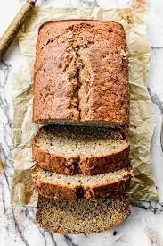

Banana Bread

Description
Banana bread is one of my favorite deserts and it is simple to make too! There isn't too much to say about the recipe or to describe it.
It is what it says on the box. It is a sweet bread with bananas mixed in for some sweetness and banana flavor
Ingredients
- Bananas, very ripe
- melted butter
- baking soda
- salt
- sugar
- egg, beaten
- Vanila extract
- all-purpose flour
Steps
- Preheat oven to 350 F
- Mash the bananas with a fork then mix in the melted butter
- Mix in all the remaining ingredients
- Pour the batter into a buttered 8x4 loaf pan. Then bake for
55 to 65 minutes, or until a toothpick placed in the center comes out clean
- Let cool in pan for a couple minutes. Then remove from pan and let cool
for atleas an hour. Then slice and serve.